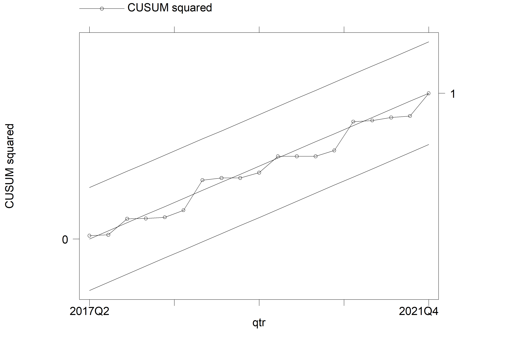
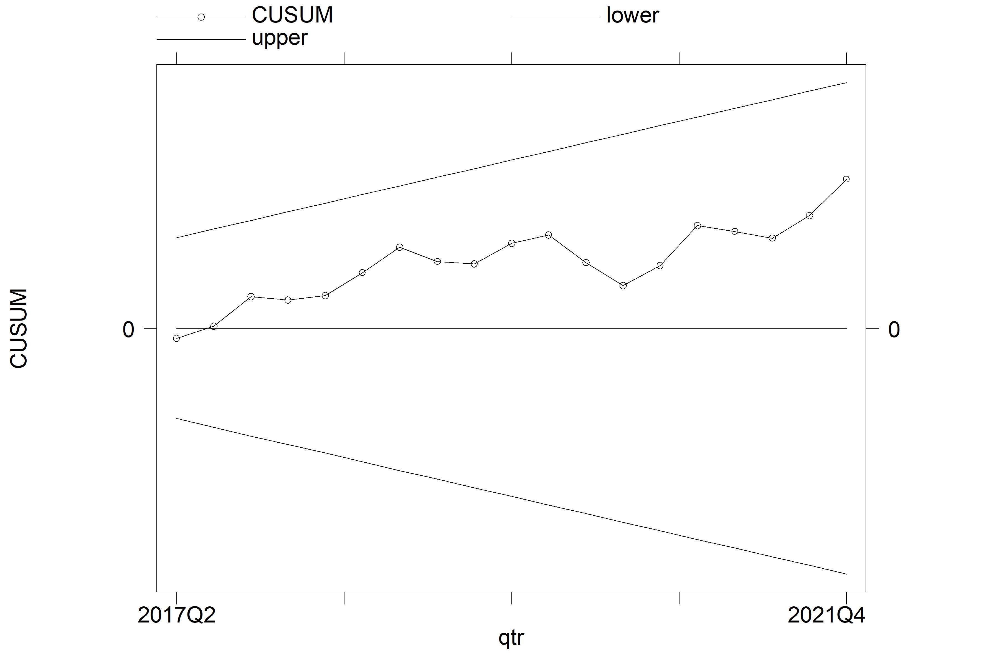
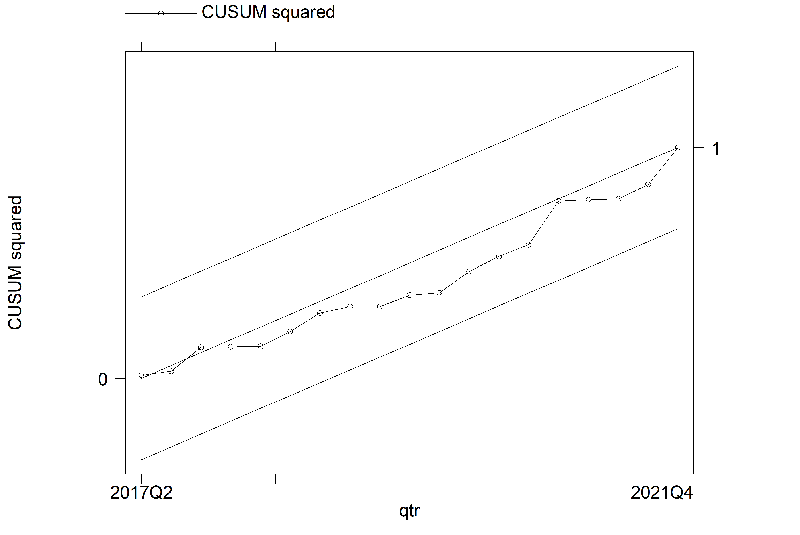
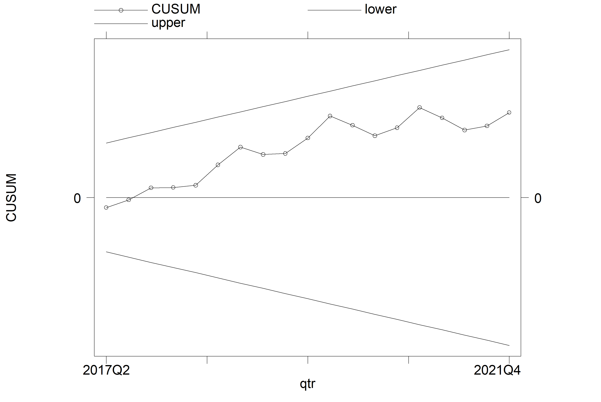

Variable | GDP | MNEXP | AGEXP | SMEXP | RMEXP | TOP | REXR |
|---|---|---|---|---|---|---|---|
Obs | 24.0000 | 24.0000 | 24.0000 | 24.0000 | 24.0000 | 24.0000 | 24.00000 |
Mean | 17,500.7500 | 211,690.8000 | 67,903.4100 | 10,292.3400 | 43,224.8500 | 410.0879 | 82.54590 |
Std. Dev. | 1,316.0730 | 229,332.1000 | 40,717.9500 | 7,753.5200 | 52,116.4900 | 110.8438 | 11.38340 |
Variance | 1,731,952.0000 | 5,260.0000 | 1.6600 | 0.0601 | 2.7200 | 12,286.3400 | 129.55830 |
Min | 15,797.9700 | 31,712.2400 | 12,856.7200 | 1,194.9570 | 5,762.7360 | 196.2572 | 64.27000 |
Max | 20,329.0600 | 996,778.5000 | 165,460.3000 | 26,925.8500 | 248,454.4000 | 581.7437 | 104.24100 |
Skewness | 0.4779 | 1.8847 | 0.6188 | 0.5863 | 3.0269 | -0.1045 | 0.25889 |
Kurtosis | 2.1255 | 6.6450 | 2.7925 | 2.1881 | 11.7723 | 1.8699 | 1.98890 |
Jaque-Berra | 2.4500 | 15.5100 | 2.3500 | 2.8100 | 26.5700 | 3.3200 | 2.41000 |
Note: The sample covers the period of Q12016-Q42021, | |||||||
The summary statistics are based on raw data. | |||||||
The results are interpreted at 5% level of significance. | |||||||

Non-Oil Sectoral Export: Implications for Nigeria’s Economic Growth
Working paper
Abstract
This study investigates the impact of Nigerian non-oil sectoral exports on its economic growth using a quarterly dataset obtained from the Nigerian National Bureau of Statistics (NBS) (2022). The dataset covered the period from the first quarter of 2016 to the fourth quarter of 2021. While existing studies have used aggregated datasets of Nigeria’s non-oil exports, our study uses disaggregated datasets that distinguish the non-oil export into four categories: manufactured goods, agricultural goods, solid minerals, and raw materials. Employing the Autoregressive Distributed Lag (ARDL) model, the study reveals that the short-run coefficients of all the non-oil sectors considered were negative and insignificant. Nevertheless, in the long-run, the coefficients were positive, with significance observed solely in the case of raw material goods exports. These findings indicate that, while non-oil exports may not immediately contribute to economic growth in the short-run, they do so in the long-run. The positive and significant long-run coefficient for raw material goods exports indicates that this sector was the sole substantial contributor to Nigerian economic growth during the period studied. Therefore, greater attention should be paid to promoting exports from other non-oil sectors, such as manufacturing, agriculture, and solid minerals, to fully realize their potential benefits in the economy. Achieving this objective requires restructuring Nigeria’s export framework to encompass a wider range of export destinations and value-added goods.
Keywords: Non-oil sectoral export, economic growth and ARDL
1 INTRODUCTION
The consensus among policymakers and researchers emphasizes the crucial role of export diversification in fostering economic progress among nations. This belief is based on the idea that export diversification promotes international trade and competitiveness, boosts foreign exchange earnings, facilitates domestic production, enhances employment opportunities, and stimulates the domestic economy undefined (Shirazi and Manap (2005); Karahan (2017); Sajo and Li (2017)). The impressive economic transformations of export-driven nations in Asia such as South Korea, Hong Kong & Singapore undefined (Abou-Stait (2005); Simangunsong & Kuang-Hui, 2018).
In view of the above, the Nigerian government, over the years have undertaken several state-led economic diversification strategies since its independence in the 1960s in an effort to diversify the country’s export basket and increase non-oil exports (Adeola and Evans (2017); Usman (2022)). The initial diversification strategies of the 1960s-1990s were predominantly inward-oriented, involving import substitution strategies that focused mainly on producing import substitutes to reduce the country’s overdependence on foreign commodities (Salvatore and Hatcher (1991)). However, this strategy showed poor economic achievements and has been largely criticized by scholars (Shafaeddin (2005); Oluikpe (2020)). Hence, drastic changes were required, such that economic diversification programs from the 1990s were predominantly outward-oriented, incorporating export promotion strategies aimed at enhancing the international competitiveness of Nigerian non-oil value-added goods and services (Hogan and Onwioduokit (1996)).
Consequently, this study investigates the impact of Nigeria’s non-oil sectoral exports on its economic growth using quarterly data from 2016 to 2021. While previous studies in this area have used aggregated datasets of Nigeria’s non-oil exports, this study uses disaggregated datasets distinguishing four categories of non-oil exports in Nigeria: manufactured, agricultural, solid minerals, and raw materials. The aim is to assess whether the consensus among scholars (that exports increase growth) holds for these non-oil sectors.
2 REVIEW OF LITERATURE
2.1 Theoretical Framework
The theoretical framework underpinning this study is the neoclassical model of the export-led growth hypothesis (ELGH). The basic doctrine of ELGH is that export is an indispensable tool for achieving growth in every economy, in the sense that increased economic growth of nations can be attained not only by increasing the amounts of labour and capital within the economy, but also by promoting and expanding exports, and as such achieving export expansion are beneficial for both developed and less developed nations around the world (Ahumada and Sanguinetti (1995); Sannassee, Seetanah, and Jugessur (2014)).
2.2 Nigeria’s Non-Oil Export: Selected Sector Contributions (2016-2021)
Figure 2.2.1 shows that manufactured goods remain the highest exported non-oil goods in Nigeria since 2016. Agriculture export came second while raw material was in the third position. The solid mineral goods export is shown to be the least exported across the period studied.

2.3 Nigeria’s Non-Oil Sectoral Export and GDP Trend from 2016-2021
Given the graphical analysis presented in Figures 2.2.1-2.2.5, it can be established that both the non-oil sectoral exports and GDP trended upward during 2016-2021, and thus supported the argument put forward by the ELGH (i.e., export stimulates growth). Though, the trend pattern for agricultural goods export was shown to be divergent between 2018 and 2020 while a similar divergent trend was experienced for solid mineral and raw material exports between 2017-2020. The trend pattern for manufactured goods export was relatively divergent between 2020-2021. The sharp fall in the GDP and the respective sector export in 2020 was due to the COVID-19 outbreak.

2.4 Empirical Review and Value Addition
The review of the existing empirical studies on the nexus between non-oil exports and economic growth in Nigeria reveals that there is a prevailing consensus among researchers that non-oil exports have a positive impact on the country’s economic growth. However, these studies relied on aggregated non-oil export datasets, and as such, the sector-specific impact of non-oil exports on Nigerian economic growth has not been examined. This study aims to fill this gap by examining the sectoral (manufactured, agricultural, solid mineral, and raw material) impact of non-oil exports on Nigeria’s economic growth using quarterly datasets from 2016 to 2020. This examination is necessary to verify whether the consensus among scholars that exports increase growth holds for the sectors included in the study.
Existing empirical studies can be categorized into two types. The first strand focuses on investigating the relationship between non-oil exports and Nigerian economic growth, while the second focuses on identifying the determinants of Nigerian non-oil exports. Within the first strand, various studies such as Vincent (2017), Sajo and Li (2017), Kromtit et al. (2017), Anthony-Orji et al. (2017), Bolaji, Oluwaseyi Adedayo, and Y Olorunfemi (2018), Tonuchi and Onyebuchi (2019), and Osabohien et al. (2019) utilized time-series econometrics techniques (OLS, ARDL, VEC, and Granger causality) to explore the impact of non-oil exports on Nigeria’s economic growth. Their findings consistently support the export-led growth hypothesis, demonstrating that non-oil exports play a positive role in contributing to Nigeria’s economic growth during the period studied. A study in this strand that bears a resemblance to our study is that of Awoke, Awoke, and Obaji (2019) which examined the impact of agriculture and manufacturing sectors on economic growth in Nigeria. However, this study made use of agriculture and manufacturing output (in contrast to agriculture and manufacturing exports used in our study) as regressors, and thus examined the relationships between sectoral outputs and Nigeria’s economic growth rather than sectoral exports and growth.
The second strand encompasses the empirical research conducted by Musibau et al. (2017), Alimi (2017), Okechukwu, De Vita, and Luo (2018), Alegwu, Aye, and Asogwa (2018) and Beecroft et al. (2020) These studies specifically focus on exploring the determinants of non-oil exports in Nigeria by employing various regressors, such as exchange rate, foreign direct investment, and globalization, among others. The outcomes of these studies vary owing to the diverse methodologies and variables employed.
3 METHODOLOGY
3.1 Data and Estimation Technique
The study made use of data sets such as GDP, real effective exchange rate, exports (total export and export by sectors), and total import. Due to the fact that non-oil sectoral export data sets are limited to 2016-2021, we thus consider quarterly data sets to increase the time frame and estimation precision. The GDP at 2010 constant prices and real effective exchange rate data sets were sourced from the Nigerian National Bureau of Statistics (NBS) Statistical Bulletin-Real Sector (2022) and the NBS Statistical Bulletin-External Sector (2022) respectively. The export and import data sets were sourced from the NBS Foreign Trade Statistics (2017 & 2021).
To analyze the data sourced the study thus made use of the Autoregressive Distributed Lag (ARDL) Model, and the justification for employing the ARDL is based on the unit-root test result presented in Table 4.1.1. This study made use of STATA 13 econometrics software to carry out the estimation and numerous tests.
3.2 Model specification
Our model specification is guided by the export-led growth hypothesis and empirical works of Anthony-Orji et al. (2017) and Awoke et al. (2019). The basic model is given as follows
\[ LNGDP = F (LNNEXP, LNTOP, LNREXR) {\tag{3.1}} \]
Where \(LNGDP\) is the log of \(GDP\) (a measure of economic growth), \(LNNEXP\) is the log of non-oil export; it is disaggregated into four, namely log of manufactured export \((lnmnexp)\), log of agricultural export \((lnagexp)\), log of solid mineral export \((lnsmexp)\), and log of raw material exports \((lnrmexp)\), \(LNTOP\) is the log of trade openness (it is calculated as a sum of imports and exports divided by GDP) and it is a measure of international competitiveness, and LNREXR is the log of the real effective exchange rate.
Note: We limited the model regressor to 3 variables since the ARDL model uses the lag value of the dependent variable as an additional regressor. Also, we suggested a logarithmic form of the model in the equations above to allow us to interpret the coefficients as elasticity. The ARDL econometric form of equation 3.1 is thus stated as follows
\[ \Delta LNGDP = \beta_0 +\delta_1ECM_{t-i}+\sum^{k1} _ {i=1} \gamma_i \Delta LNGDP_{t-i} + \sum^{k2} _ {i=0} \Phi_i \Delta LNNEXP_{t-i} + \] \[ \sum^{k3} _ {i=0} \Omega_i \Delta LNTOP_{t-i} + \sum^{k4} _ {i=0} \eta_i \Delta LNEXR_{t-i} + \lambda_1 LNGDP_{t-i} + \lambda_2 \] \[ LNNEXP_{t-i} + \lambda_3 LNTOP_{t-i} + \lambda_4 LNEXR_{t-i} + \epsilon_i {\tag{3.2}} \]
The first part (i.e.,\(Υ_i\),\(ϕ_i\),\(Ω_i\) and \(η_i\) ) of equation 3.2 represents the short-run dynamics while \(λ_1-λ_4\) is the long-run dynamics. The \(∂_1 ECM_(t-i)\)is the error correction term and it measures the speed of adjustment if there is long-run disequilibrium, t stands for time, $β_0 $ is the intercept and E_t is the error term. Our main variable of interest is the coefficients of \(LNNEXP_(t-i)\) (i.e., \(ϕ_i\) and \(λ_2\)) which will be obtained by estimating model 3.2. Each model will be estimated by switching to a non-oil sector export variable (i.e., manufactured, agricultural, solid mineral and raw material export).
4 RESULTS AND INTERPRETATION
4.1 Descriptive Statistics
Table 1 presents the descriptive statistics of the variables used in the study model. The average Nigerian GDP within these periods was ₦17,500 billion. The highest value was obtained in the last quarter of 2021, at ₦20,329 billion while the lowest was ₦15,797 billion, which was recorded in the first quarter of 2017. The average value of manufacturing goods exports was ₦211.69 million; notably, the highest value of ₦996.78 million was recorded in the third quarter of 2019, whereas the lowest value of ₦317.12 million was obtained in the second quarter of 2016. In terms of agricultural goods exports, the average value stood at ₦67,903 million with the highest value of ₦165.460 million recorded in the second quarter of 2016, while the lowest of ₦12,856 million was obtained in the first quarter of 2016. The average solid mineral goods export over the period was ₦10,292 million, the highest of ₦26,925 million was obtained in the first quarter of 2018, while the lowest of ₦1,194 million was obtained in the first quarter of 2016. The average raw material goods export was ₦43,224 million; the highest of ₦248,454 million was obtained in the fourth quarter of 2021, while the lowest of ₦5,762 million was obtained in the second quarter of 2016.
The Jarque-Bera statistic, which combines the skewness and kurtosis statistics to determine the normality of a variable, was used to assess the normality of the variables in Table 4.1.1. The results indicate that the normality hypothesis can be rejected for the variables MNEXP and RMEXP at the 5% level of significance. This implies that these variables are not normally distributed. All other variables in the table were found to be normally distributed.
4.2 Correlation Analysis
We commenced our preliminary analysis by examining the correlation between the variables of interest. The correlation was conducted using the raw datasets. The results, as presented in Table 2, show that there is no high correlation (i.e., 0.8 or greater) between any two regressors included in the study. This suggests that the problem of multicollinearity is least likely to occur.
| GDP | MNEXP | AGEXP | SMEXP | RMEXP | TOP | REXR |
|---|---|---|---|---|---|---|---|
GDP | 1 | ||||||
MNEXP | 0.2198 | 1.0000 | |||||
AGEXP | 0.0630 | 0.2384 | 1.0000 | ||||
SMEXP | -0.0846 | -0.0987 | 0.1588 | 1.0000 | |||
RMEXP | 0.5177 | 0.2177 | 0.5106 | 0.2677 | 1.0000 | ||
TOP | 0.3238 | 0.5196 | 0.7199 | 0.2768 | 0.5781 | 1.0000 | |
REXR | -0.1081 | -0.1862 | -0.2876 | 0.6001 | -0.3099 | -0.1111 | 1 |
4.3 Unit Root Test
The outcomes of the unit root tests are displayed in Table 3. It is evident from the results that LNGDP is the only variable found to be stationary at level, denoted as I(0), while all other variables exhibit stationarity after the first difference, represented as I(1). This characteristic of the variables indicates that the Autoregressive Distributed Lag (ARDL) model is well-suited for model estimation.
Variables | ADF Test | Phillip-Perron Test | ||||
|---|---|---|---|---|---|---|
Level | First Diff | Remark | Level | First Diff | Remark | |
LNGDP | -6.930*** | -8.524*** | I(0) | -3.453*** | -4.882*** | I(0) |
LNMNEXP | -1.81 | -4.211*** | I(1) | -2.506 | -8.284*** | I(1) |
LNAGEXP | -2.169 | -6.016*** | I(1) | -2.164 | -6.625*** | I(1) |
LNSMEXP | -2.382 | -2.535 | I(1) | -2.217 | -4.196*** | I(1) |
LNRMEXP | -1.11 | -4.038*** | I(1) | -0.543 | -5.338*** | I(1) |
LNTOP | -1.813 | -2.972* | I(1) | -2.455 | -5.538*** | I(1) |
LNREXR | -1.855 | -6.623*** | I(1) | -1.927 | -4.638*** | I(1) |
Note: ***, **, and * indicate 1%, 5% and 10% statistical level of | ||||||
significance at which the null hypothesis of unit root is rejected. | ||||||
4.4 ARDL Bounds F Test for Cointegration
Table 4 presents the Pesaran/Shin/Smith (2001) ARDL bounds test for cointegration, using appropriate lags as given by the Akaike Information Criterion (AIC). The results for each model show that the F-statistic is greater than the bounds at the 5% significance level. This indicates that there is a long-run cointegrated relationship between the variables in the models. Hence, we proceed to estimate the ARDL long-run and short-run models.
Model | F-Stat | Lower Bound I(0) | Upper Bound I(1) |
|---|---|---|---|
1 | 22.635 | 3.23 | 4.35 |
2 | 49.328 | 3.23 | 4.35 |
3 | 46.195 | 3.23 | 4.35 |
4 | 109.953 | 3.23 | 4.35 |
4.5 ARDL Long and Short Run Estimates
We present the ARDL estimates in Table 5 The table reports the study’s variables of interest, as well as other regressors that were found to be significant in at least one of the estimated models. The lower part of the table presents the error correction mechanism (ADJ) and the adjusted R-squared. As required, the coefficient of ADJ for all the models estimated was found to be negative and significant. Additionally, the models were all found to be fit, as shown by the adjusted R-squareds.
Variable | Regressors | Coef. | Std. Err | P-Value |
|---|---|---|---|---|
Long Run | ||||
lnmnexp | 0.0055092 | 0.0033972 | 0.166 | |
Lnagexp | 0.0055173 | 0.0076685 | 0.504 | |
Lnsmexp | 0.0104869 | 0.0080279 | 0.248 | |
Lnrmexp | 0.0179639 | 0.0062051 | 0.034 | |
lntop | 0.0651724 | 0.0166606 | 0.011 | |
Lnrexr | -0.0596076 | 0.0165153 | 0.015 | |
Short Run | ||||
Lnmnexp | -0.0143823 | 0.0123982 | 0.298 | |
Lnagexp | -0.0145853 | 0.0264214 | 0.605 | |
Lnsmexp | -0.0524144 | 0.0341015 | 0.185 | |
Lnrmexp | -0.0877478 | 0.0308183 | 0.036 | |
Lntop | -0.1866823 | 0.0400243 | 0.006 | |
Lnrexr | 0.4555869 | 0.1201573 | 0.013 | |
Observation | 21 | |||
ADJ | -4.18082, -3.663726, -3.342193, -3.57024 | 0.000 | ||
Adjusted R-Square | 0.97, 0.97, 0.97, 0.98 | |||
The results are interpreted at 5% level of significance | ||||
The long-run estimates presented in Table 5 shows that all non-oil sector exports included in the models had a positive impact on Nigeria’s GDP. However, these positive impacts were only found to be significant for raw material exports (lnrmexp). In other words, the positive effect of increased manufactured, agricultural, and solid mineral exports from 2016 to 2021 did not result in a substantial rise in the country’s economic growth. However, raw material exports contributed substantially to economic growth during this period. Furthermore, the elasticity coefficients of the log of manufactured export (lnmnexp) and the log of agricultural export (lnagexp) were shown to be lower than those of solid mineral export (lnsmexp) and raw material export (lnrmexp). This implies that the economic growth benefit derived from manufactured and agricultural exports was comparatively lower during 2016-2021, despite numerous efforts towards improving the sector’s outputs and competitiveness. In addition, the log of trade openness (lntop) and real effective exchange rate (lnrexr) were found to be significantly positive and negative, respectively. This implies that a substantial economic growth benefit was derived from trade openness during the period studied. However, the increase in the real effective exchange rate hindered the country’s economic growth during the same period. The short-run estimates of the coefficients of elasticity for all non-oil sector exports included in the models were all negative and insignificant. Although the short-run estimates are not our main focus in this study, the negative coefficients could be due to the fact that the short run is typically a period of learning characterized by a narrow export portfolio and higher production costs. Economies often begin to reap the benefits of their exports when they achieve economies of scale.
4.6 Diagnostic Tests
4.6.1 Stability Test
The stability test results, as presented in the appendix section, show that the CUSUM and CUSUM squares plots for all models estimated fall inside the critical bounds. This implies that the estimated parameters are stable over the period studied.
4.6.2 Autocorrelation, Heteroskedasticity and Normality Test
We employed the Breusch–Godfrey test to test for autocorrelation in our models given lag regressors. The autocorrelation test results presented in Table 6 indicate that the null hypothesis of no autocorrelation was not rejected for all models except model 2. This implies that model 2 suffers from the autocorrelation problem, and as such, the standard error associated with lnagexp is upward biased. It is important to note that this does not affect the model coefficient estimate.
The heteroskedasticity test results presented in Table 6 indicate that the null hypothesis of homoskedasticity was not rejected for all models. This implies that the models are homoskedastic and do not suffer from heteroskedasticity. Additionally, the normality test results presented in Table 4.6.3 indicate that the null hypothesis of normality was not rejected for all models. This implies that the errors are normally distributed.
Models | Lags | chi2 | Prob > chi2 |
|---|---|---|---|
1 | 2 | 5.452 | 0.0655 |
2 | 2 | 12.376 | 0.0021 |
3 | 2 | 1.307 | 0.5203 |
4 | 2 | 4.532 | 0.1037 |
The results are interpreted at 5% level of significance Ho: No Serial Correlation | |||
Models | chi2(20) | Prob > chi2 |
|---|---|---|
1 | 21 | 0.3971 |
2 | 21 | 0.3971 |
3 | 21 | 0.3971 |
4 | 21 | 0.3971 |
The results are interpreted at 5% level of significance Ho: Homoskedasticity | ||
Models | chi2 | Prob > chi2 |
|---|---|---|
1 | 3.351 | 0.1872 |
2 | 1.383 | 0.5008 |
3 | 0.324 | 0.8502 |
4 | 4.333 | 0.3971 |
The results are interpreted at 5% level of significance Ho: Normality | ||
5 CONCLUSION AND RECOMMENDATIONS
Based on the findings presented in the preceding sections, this study concludes that Nigeria’s non-oil exports did not yield immediate short-term benefits during the studied period. However, benefits were observed in the long run. The delay in short-term gains is a typical phenomenon, as it takes time for economies to capitalize on export opportunities. This requires the development of a diversified export portfolio and attainment of economies of scale. Regarding the long-run analysis, manufactured goods exports constitute the largest share of Nigeria’s exports. However, its contribution to the country’s economic growth is deemed insignificant. Similarly, exports of agricultural and solid mineral goods also demonstrate an insignificant impact on the overall economic growth of the nation. By contrast, raw material goods exports have a significant impact.
The findings of this study suggest that even though it is generally known that relying on primary products export such as raw materials can be dangerous, Nigerian raw material exports have contributed substantially to the country’s economic growth. In contrast, manufactured goods exports, which are considered more valuable, have had a negligible impact on the country’s growth. This suggests that more efforts should be made to promote manufacturing, agriculture, and solid mineral goods exports in Nigeria so that their potential benefits can be felt in the economy. Consequently, in recognition that there is a plethora of strategies for attaining sustainable growth through export diversification, we note that while inward-oriented policies may work for some non-oil sectors, others may require an outward-oriented approach. Therefore, it is important to craft diversification policies tailored to the needs of each non-oil sector. In this regard, our recommendations are threefold.
The government should develop a comprehensive export-diversification strategy that considers the specific needs of each non-oil sector. This strategy should include a mix of inward- and outward-oriented policies as well as measures to improve the business environment for exporters.
The government should provide targeted financial and technical assistance to non-oil exporters. This assistance could help exporters improve their products and marketing as well as access new markets.
The government should work to improve trade infrastructure in Nigeria. This includes improving the efficiency of the ports and customs clearance process as well as providing better access to credit for exporters.
These recommendations are based on the findings of our study, which suggest that export diversification is essential for Nigeria to achieve sustainable economic growth. We believe that these recommendations will help to create a more conducive environment for export growth in Nigeria.
References
Appendices


model 1


model 2


model 3


model 4